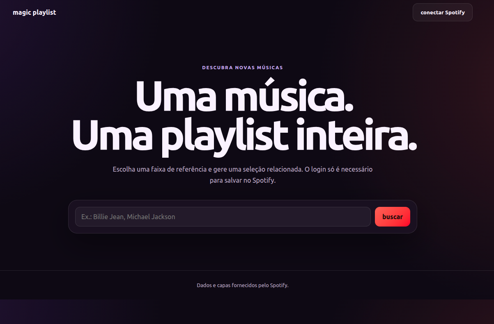

Magic Playlist

Full-Stack Development / Spotify API
I built Magic Playlist to generate a new playlist from a single reference song. The application searches the Spotify catalog, creates a selection of related tracks, allows users to remove songs or generate another version, and requests Spotify login only when the user chooses to save the playlist.
Methods
API Integration
OAuth Authentication
Data Processing
Dynamic Rendering
Responsive Design
Tools
Python
Flask
JavaScript
Spotify Web API
Requests
Render
Technical Overview
Flask handles the server-side communication with Spotify and protects the application credentials from being exposed in the browser.
JavaScript sends search and generation requests to the Flask API, renders the returned tracks, updates the interface, and manages actions such as removing songs or generating a new version.
Spotify authentication is only requested when the user wants to save the generated playlist to their own account.
Main Features
• Search for songs and artists in the Spotify catalog.
• Select one track as the playlist reference.
• Generate a collection of related tracks.
• Display album covers, track names, artists, and Spotify links.
• Remove unwanted tracks before saving.
• Generate another playlist from the same reference song.
• Save the final playlist as public or private on Spotify.
• Responsive interface for desktop and mobile devices.
Application Flow
The user starts by searching for a song or artist and selecting the most appropriate result from the Spotify catalog.
The application sends the selected track to the Flask back end, which retrieves related music data and returns a generated playlist.
The user can review the result, remove individual tracks, or generate a different version before choosing to save it.
When the save action is selected, the user connects their Spotify account and the application creates the playlist through the API.
Challenges
• Protecting Spotify credentials while keeping the interface simple.
• Connecting the JavaScript interface to the Flask API.
• Handling Spotify authentication only when required.
• Preventing duplicate tracks and keeping playlist results relevant.
• Managing API errors, missing results, and interrupted login flows.
• Preparing callback URLs and environment variables for deployment.
What I Learned
• I improved my understanding of third-party API integration.
• I learned how OAuth connects an application to a user's account.
• I practiced processing JSON data returned by an external service.
• I gained experience separating public interface logic from protected server-side credentials.
• I improved my ability to design asynchronous user flows with loading, success, and error states.
